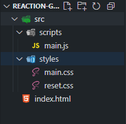

Workshop: Bouw je eigen reactiespel
In deze workshop leer je stap voor stap hoe je onderstaand reactiespel bouwt met HTML, CSS en JavaScript.
Benodigdheden
Om deze workshop te volgen heb je het volgende nodig:
Stappenplan
In dit project ga je stap voor stap een reaction game bouwen met HTML, CSS en JavaScript. Klik zo snel mogelijk op de bal wanneer die verschijnt. Elke juiste klik verhoogt je score en versnelt het interval, waardoor het spel steeds uitdagender wordt. Maar let op: als je naast de bal klikt of te laat reageert, krijg je een Game Over-melding. Aan het einde heb je een volledig werkend spel met scoretelling, een leaderboard en een overzicht van de top 5 scores.
-
Stap 1: Folderstructuur
-
Maak een nieuwe map aan op je computer en geef deze de naam
reaction-game(of kies een naam naar voorkeur). Open vervolgens VS Code en open daarin de zojuist aangemaakte map. Zie de video hieronder voor hulp. -
Maak in VS Code dezelfde folderstructuur na zoals weergegeven op de afbeelding. Klik daarvoor op het eerste icoontje rechts van de map
reaction-gameom een nieuw bestand aan te maken (zoalsindex.html,main.js,main.cssenreset.css). Gebruik het tweede icoontje om nieuwe mappen aan te maken, zoalssrc,scriptsenstyles. Zorg ervoor dat elk bestand in de juiste map staat zoals in het voorbeeld.
-
Start de Live Server door rechtsonder in de blauwe balk van VS Code te klikken op Go Live. Jouw standaardbrowser wordt automatisch geopend en je ziet een blanco webpagina verschijnen. Dit betekent dat alles goed is ingesteld en je klaar bent om te beginnen met bouwen!
-